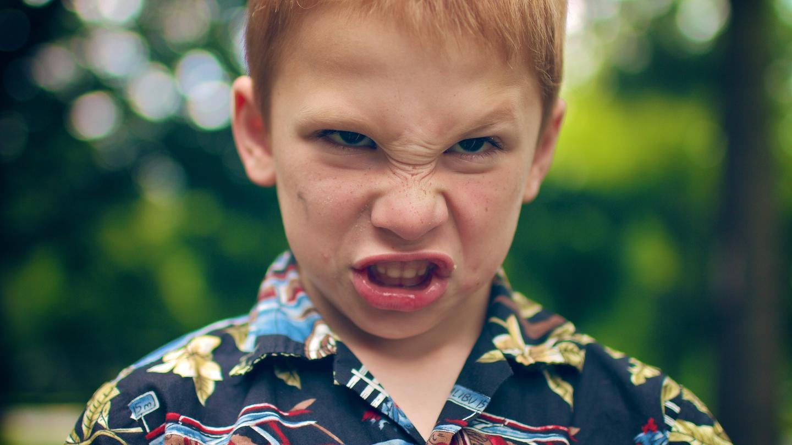

"I asked a pair of experts if people with no siblings were really more confident, selfish, and self-absorbed."
You've probably heard a version of what's sometimes called "Only Child Syndrome": Supposedly, people without siblings get so much attention from their parents when they're kids that they turn into obnoxious, entitled adults. According to this well-worn stereotype, Angelica, the spoiled, sibling-less three-year-old from Rugrats grew up to be some kind of attention-seeking megalomaniac, like former chairman of the Federal Reserve—and only child—Alan Greenspan.
Another version of this theory comes from China, where, if you were born during the "one-child policy," you're ostensibly part of a generation of self-centered only children called " Little Emperors."
On one hand, reducing people's entire psychological profile to one factor like that seems reductive. Still, something as seemingly insignificant as the number of words you hear before you're three years old can have a scientifically documented effect on what kind of person you grow up to be—surely being an only child does something to you, right?
To separate fact from fiction, we found some experts on what happens to children without siblings. Dr. Toni Falbo of the University of Texas is one the world's leading researchers on only-child-itis. Dr. Carl Pickhardt is a therapist who spent years in the trenches with families, including ones with only children, and then wrote a couple books about what he learned.
VICE: Let's start at the source: Are parents of only children somehow different?
Carl Pickhardt: This only child is the first and last child that these parents are going to have, and it's the only chance at parenting they get, so they really want to do it well and right. This is a family where they're making a really hard effort to do their best by their child, who conversely—because of the attachment of the parents—really wants to do well by the parents, and do right by them, so it's not, generally speaking, a laid-back family situation.
Toni Falbo: In a lot of one-child families, the parents aren't really interested in the kid and they might have had the kid just because it was maybe sort of an accident. Or in some cultures you have to have a kid, that's how you know that you're really married. So they send the kid off to boarding school or, you know, they're not really invested in the kid at all. Those kids suffer from other issues, potentially, but that's not real common in the United States.
Are the inattentive parents of only children different from other inattentive parents? Falbo: There's only so much one can attend to at one time. So some kids probably do get away with a whole bunch of stuff because the parents just don't know about it.
But only children do usually get a larger share of the parents' attention than they would otherwise, right? Pickhardt: The only child gets all the social, emotional, and material parenting—and focus—that the parents have to give. What that means is that they don't have to share that with anybody on the one hand, but they also have to absorb everything that the parents have to give.
And your research has shown that that's actually good in measurable ways, right? They have higher self-esteem?
Falbo: Not to say they have very high self-esteem, but, on average they score a little higher in a statistically significant way, but that might be one point out of 20; so it's not a huge difference. It's enough to be statistically significant. And, of course there's going to be a lot of variety: There are going to be some people with low self-esteem and some people who have very high self-esteem. So we're just looking at the average score across a group of people.
But does that mean they're full of themselves?
Pickhardt: They tend to be very often self-confident because they peer with adults. What happens is they tend to be comfortable dealing with adult authorities, and speaking up to adult authorities, because to some degree they put themselves on the same standing with adult authorities.
How do we know they're comfortable around adults?
Falbo: There's some strong anecdotal information about this. Teachers who have only children in their classrooms say that the only children really feel very comfortable interacting with the teacher. Whereas if you come from a larger family or you're a later-born, you may not have to spend so much time focusing on what the teacher says.
Since they talk to adults, do only children learn curse words sooner?
Falbo: I don't know [laughs]. I haven't done that research study. You ought to put that out there as a question and see what people think on the web. Report to me with your findings!
This all sounds great, but is there a downside?
Pickhardt: The downside of that is that they can be pretty hard on themselves— because when they say to themselves, I am in this family. I can have an equal say to my parents, and equal standing, what they sometimes do is they apply equal standards and say, I should be able to do as well as my parents, and they get exaggerated standards of performance. So they push themselves pretty hard. If you have an only child, generally speaking, you don't have to do much pushing, because they're over-pushing themselves.
How can that hurt them?
Pickhardt: They can be pretty critical when they don't do as well as they like. They're pretty strongly self-directed. They're usually self-willed because they're used to looking out for their own self-interests. Very often they can be quite possessive in terms of possessions, and privacy, and time to themselves. They're pretty sure of the values that they hold, and they can sense that they know very often what is right. Often in adult relationships, they're not very comfortable in conflict, because they just haven't had much experience with it.
